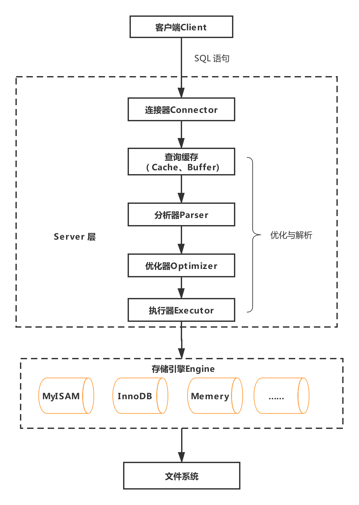
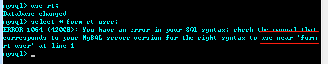
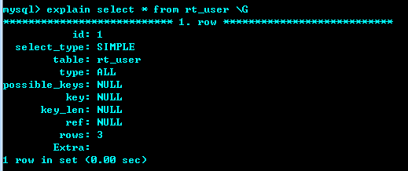
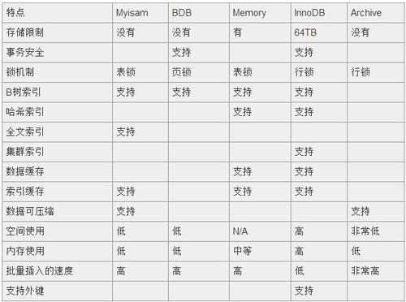

对于MySQL而言，其实分为客户端与服务端。
服务端，就是MySQL应用，当我们使用net start mysql命令启动的服务，其实就是启动了MySQL的服务端。
客户端，负责发送请求到服务端并从服务端获取数据，客户端可以有多种形式，可以是我们通过mysql -uroot -p1234打开的黑窗口，也可以是我们使用的Nativecat、SQLyog等数据库连接工具，甚至我们的程序，也可以称作MySQL的客户端。
而当我们在mysql窗口或者数据库连接工具中输入一句sql后，我们就可以获取到想要的数据，这中间MySQL到底是怎么工作的呢？

在我们执行SQL后，例如一句简单的select * from user where name = ‘yanger’，客户端发送请求到服务端，请求到达Server层，会经过连接器、查询缓存、分析器、优化器、执行器等，最终通过存储引擎从文件系统获取数据或者插入数据到文件系统。
在客户端程序发起连接的时候，需要携带主机信息、用户名、密码，服务器程序会对客户端程序提供的这些信息进行认证，如果认证失败，服务器程序会拒绝连接。
连接命令大家都比较熟悉。
mysql -h$ip -P$port -u$user -p输完命令之后，需要继续输入密码，密码也可以直接跟在 -p 后面，但这样可能会导致你的密码泄露，如果你连的是生产服务器，强烈建议你不要这么做。
MySQL采用TCP作为服务器和客户端之间的网络通信协议，完成 TCP 握手后，连接器主要做密码校验和权限获取。
如果用户名或密码不对，你就会收到一个"Access denied for user"的错误
如果用户名密码认证通过，连接器会到权限表里面查出你拥有的权限。之后，这个连接里面的权限判断逻辑，都将依赖于此时读到的权限
MySQL的默认连接是8小时，由参数 wait_timeout 控制的，如果超过这个时间不使用，会自动断开，并在之后的操作中，抛出Lost connection to MySQL server during query的错误。
针对于查询语句，MySQL 拿到一个查询请求后，会先到查询缓存看看，之前是不是执行过这条语句，之前执行过的语句及其结果可能会以 key-value 对的形式，被直接缓存在内存中。如果命中缓存，将直接返回结果。如果不在查询缓存中，就会继续后面的执行阶段。执行完成后，执行结果会被存入查询缓存中。
针对于更新语句，包含插入删除语句，MySQL 收到更新请求时，会把查询缓存中该表相关的缓存数据全部清空。
我们可以看到，只要有更新，缓存就会失效，而对于正常的业务，更新其实是比较频繁的，也就是说，其实MySQL的查询缓存命中率并不会很高，所以建议一般不到开启。
可以通过设置 query_cache_type 为 DEMAND 来关闭查询缓存功能。而事实上，在 MySQL 8.0 版本，更是直接移除了查询缓存这一个功能。
MySQL 首先需要对SQL语句进行分析，分析过程本质上算是一个编译过程，涉及词法解析、语法分析、语义分析等阶段，通过分析MySQL知道自己要做什么。
如果语句不对，就会收到“You have an error in your SQL syntax”的错误提醒，一般语法错误会提示第一个出现错误的位置，所以你要关注的是紧接“use near”的内容。

面对分析器拿到的结果，MySQL会做一些优化处理，例如在表里面有多个索引的时候，决定使用哪个索引，或者在一个语句有多表关联（join）的时候，决定各个表的连接顺序。
优化的结果就是生成一个执行计划，这个执行计划表明了应该使用哪些索引进行查询，表之间的连接顺序是啥样的。我们可以使用EXPLAIN语句来查看某个语句的执行计划。

这里\G在命令窗口无法一行时，可以竖着展示结果，方便查看。
经过了分析器和优化器，就正式进行执行阶段了，不过执行之前，需要做权限验证，如果权限不足，就会抛出权限的错误。其实在查询缓存的时候，一样也会进行权限校验。
如果通过验证，执行器就打开表继续执行。打开表的时候，执行器就会根据表的引擎定义，去使用这个引擎提供的接口。
MySQL支持非常多种存储引擎，常用的是InnoDB和MyISAM，MySQL的默认存储引擎是InnoDB。

假如我们选择是InnoDB引擎，对于查询，那InnoDB 会取这个表的第一行来进行判断是不是符合要求，符合则存在结果集中，否则继续进行下一行，直到该表的最后一行。
然后存储引擎将结果返回给执行器， 执行器拿着结果返回给客户端，这样一句SQL就执行完成了。